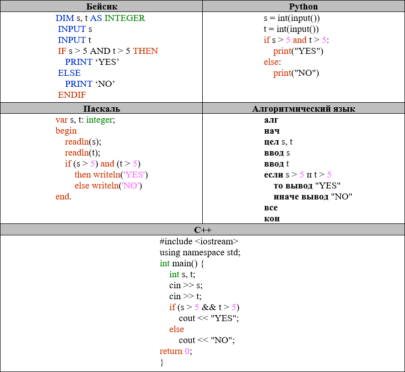

Решение задания 6
Вопрос
Сколько было запусков программы, при которых программа напечатала «YES»?
Было проведено 9 запусков программы, при которых в качестве значений переменных s и t вводились следующие пары чисел:
(6, 8); (3, 5); (–7, 2); (7, 7); (9, 8); (–1, 3); (–4, 5); (6, 9); (2, –1).
Решение
Для решения задачи нужно проанализировать условия, при которых программа напечатает «YES». Рассмотрим условия программы:
- if (s + t > 10) and (s * t < 20):
Программа напечатает «YES», если сумма переменных s и t больше 10, а их произведение меньше 20.
Проверим каждую пару значений:
- (6, 8): 6 + 8 = 14 > 10, 6 * 8 = 48 > 20 (Нет)
- (3, 5): 3 + 5 = 8 < 10 (Нет)
- (–7, 2): –7 + 2 = –5 < 10 (Нет)
- (7, 7): 7 + 7 = 14 > 10, 7 * 7 = 49 > 20 (Нет)
- (9, 8): 9 + 8 = 17 > 10, 9 * 8 = 72 > 20 (Нет)
- (–1, 3): –1 + 3 = 2 < 10 (Нет)
- (–4, 5): –4 + 5 = 1 < 10 (Нет)
- (6, 9): 6 + 9 = 15 > 10, 6 * 9 = 54 > 20 (Нет)
- (2, –1): 2 + (–1) = 1 < 10 (Нет)
- (6, 9): 6 + 9 = 15 > 10, 6 * 9 = 54 > 20 (Нет)
- (6, 8): 6 + 8 = 14 > 10, 6 * 8 = 48 > 20 (Нет)
- (6, 8): 6 + 8 = 14 > 10, 6 * 8 = 48 > 20 (Нет)
- (6, 8): 6 + 8 = 14 > 10, 6 * 8 = 48 > 20 (Нет)
- (6, 9): 6 + 9 = 15 > 10, 6 * 9 = 54 > 20 (Нет)
Таким образом, ни одна из пар не удовлетворяет обоим условиям, и программа не напечатает «YES» ни разу.
Ответ: 0